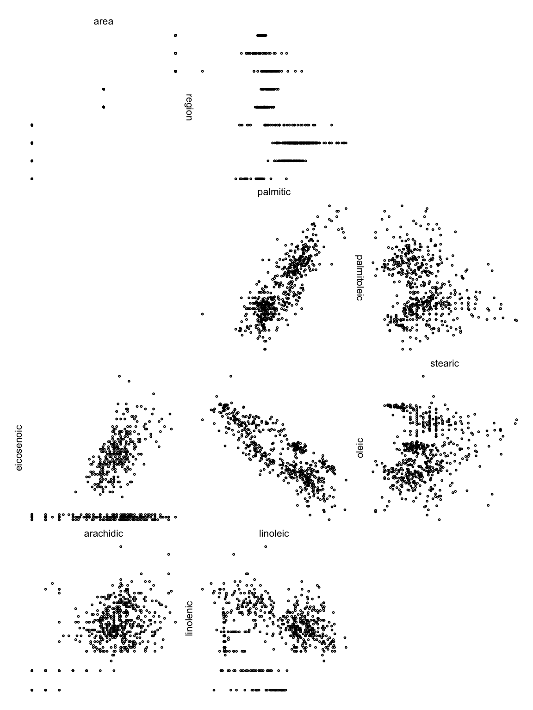
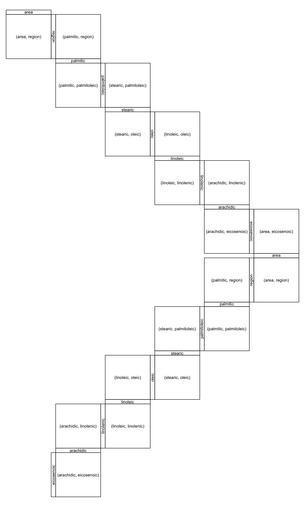
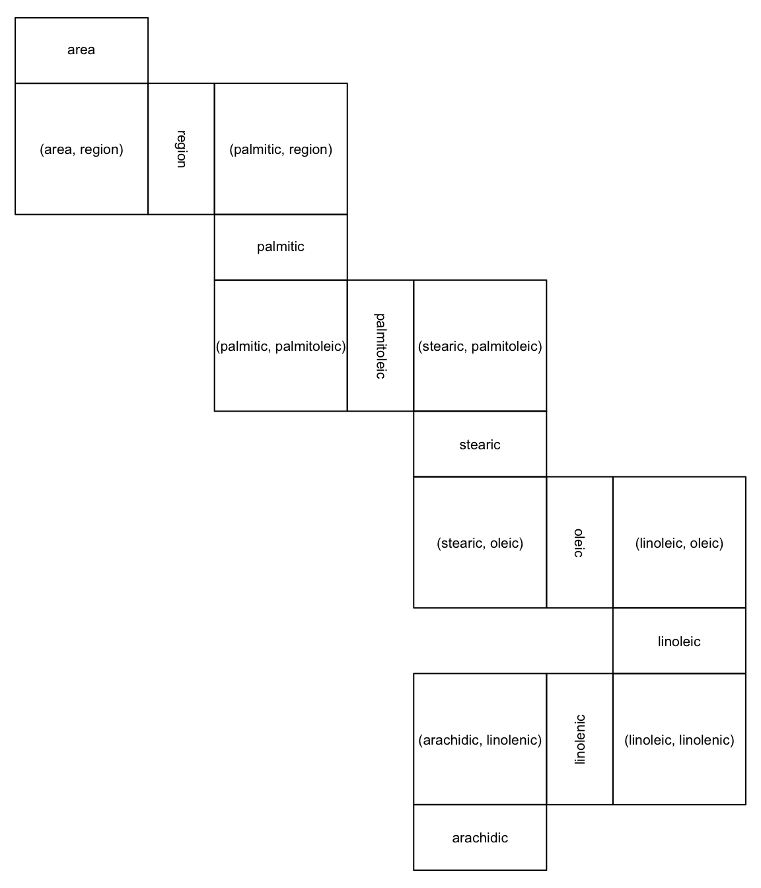
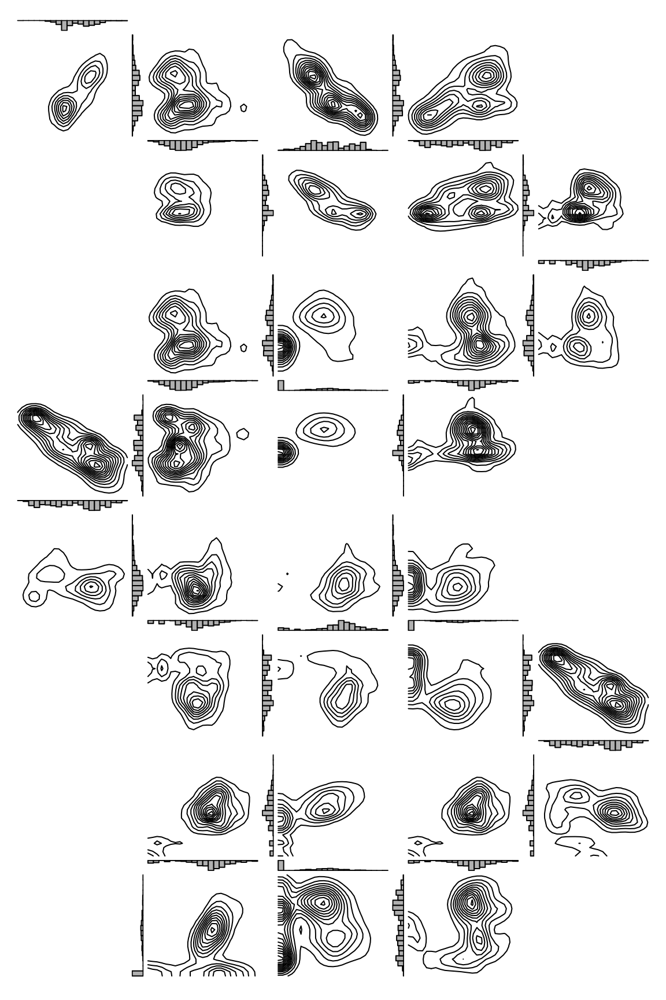
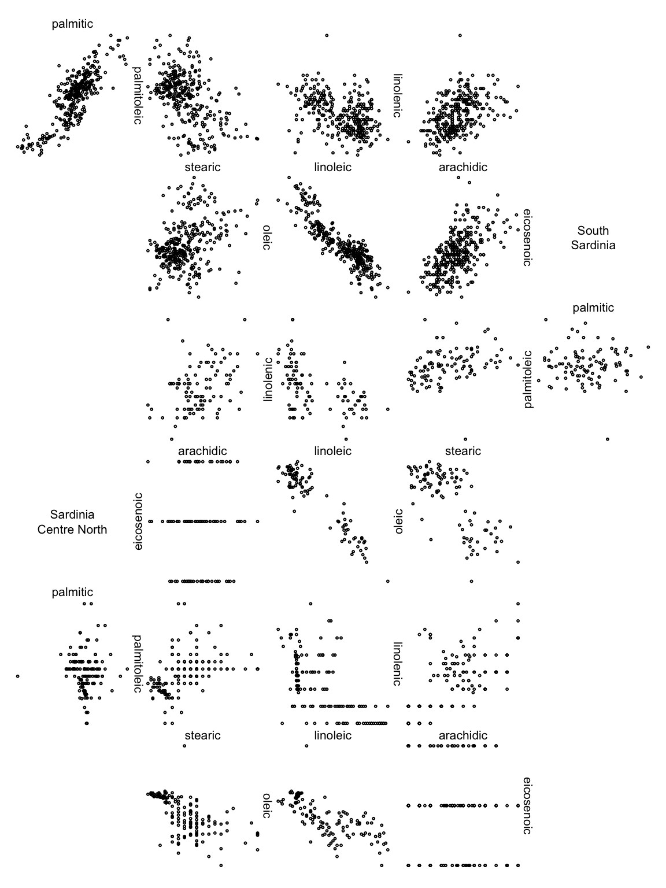
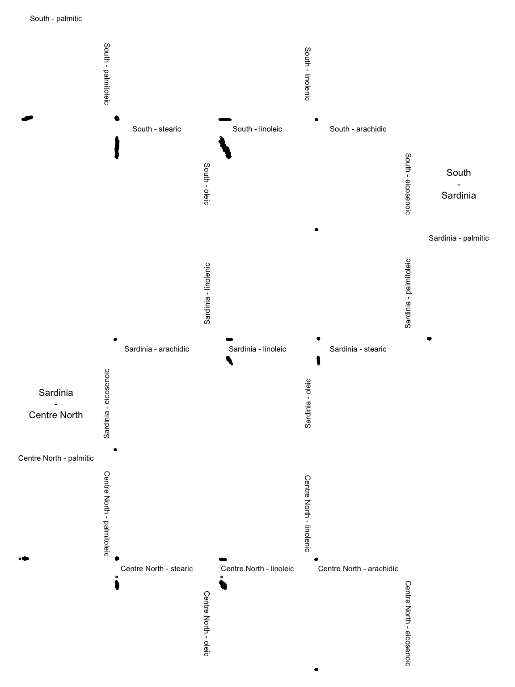

Zigzag expanded navigation plots in R: The R package zenplots
M. Hofert and R. W. Oldford
2025-09-08
Source:vignettes/selected_features.Rmd
selected_features.RmdThis vignette accompanies the paper “Zigzag expanded navigation plots in R: The R package zenplots”. Note that sections are numbered accordingly (or omitted). Furthermore, it is recommended to read the paper to follow this vignette.
2. Zenplots
As example data, we use the olive data set:
data(olive, package = "zenplots")Reproducing the plots of Figure 1:
zenplot(olive)
zenplot(olive, plot1d = "layout", plot2d = "layout")Considering the str()ucture of zenplot()
(here formatted for nicer output):
str(zenplot)function (x, turns = NULL, first1d = TRUE, last1d = TRUE,
n2dcols = c("letter", "square", "A4", "golden", "legal"),
n2dplots = NULL,
plot1d = c("label", "points", "jitter", "density", "boxplot",
"hist", "rug", "arrow", "rect", "lines", "layout"),
plot2d = c("points", "density", "axes", "label", "arrow",
"rect", "layout"),
zargs = c(x = TRUE, turns = TRUE, orientations = TRUE,
vars = TRUE, num = TRUE, lim = TRUE, labs = TRUE,
width1d = TRUE, width2d = TRUE,
ispace = match.arg(pkg) != "graphics"),
lim = c("individual", "groupwise", "global"),
labs = list(group = "G", var = "V", sep = ", ", group2d = FALSE),
pkg = c("graphics", "grid", "loon"),
method = c("tidy", "double.zigzag", "single.zigzag"),
width1d = if (is.null(plot1d)) 0.5 else 1,
width2d = 10,
ospace = if (pkg == "loon") 0 else 0.02,
ispace = if (pkg == "graphics") 0 else 0.037, draw = TRUE, ...)2.1 Layout
To investigate the layout options of zenplots a bit more, we need a larger data set. To this end we simply double the olive data here (obviously only for illustration purposes):
olive2 <- cbind(olive, olive) # just for this illustrationReproducing the plots of Figure 2:
zenplot(olive2, n2dcols = 6, plot1d = "layout", plot2d = "layout",
method = "single.zigzag")
zenplot(olive2, n2dcols = 6, plot1d = "layout", plot2d = "layout",
method = "double.zigzag")
zenplot(olive2, n2dcols = 6, plot1d = "layout", plot2d = "layout",
method = "tidy")Note that there is also method = "rectangular" (leaving
the zigzagging zenplot paradigm but being useful for laying out 2d plots
which are not necessarily connected through a variable; note that in
this case, we omit the 1d plots as the default (labels) is rather
confusing in this example):
zenplot(olive2, n2dcols = 6, plot1d = "arrow", plot2d = "layout",
method = "rectangular")Reproducing the plots of Figure 3:
zenplot(olive, plot1d = "layout", plot2d = "layout", method = "double.zigzag",
last1d = FALSE, ispace = 0.1)
zenplot(olive, plot1d = "layout", plot2d = "layout", n2dcol = 4, n2dplots = 8,
width1d = 2, width2d = 4)
3. Zenpaths
A very basic path (standing for the sequence of pairs (1,2), (2,3), (3,4), (4,5)):
(path <- 1:5)## [1] 1 2 3 4 5A zenpath through all pairs of variables (Eulerian):
(path <- zenpath(5))## [1] 5 1 2 3 1 4 2 5 3 4 5If dataMat is a five-column matrix, the zenplot of all
pairs would then be constructed as follows:
zenplot(x = dataMat[,path])The str()ucture of zenpath() (again
formatted for nicer output):
str(zenpath)function (x, pairs = NULL,
method = c("front.loaded", "back.loaded", "balanced",
"eulerian.cross", "greedy.weighted", "strictly.weighted"),
decreasing = TRUE)Here are some methods for five variables:
zenpath(5, method = "front.loaded")## [1] 5 1 2 3 1 4 2 5 3 4 5
zenpath(5, method = "back.loaded")## [1] 1 2 3 1 4 2 5 3 4 5 1
zenpath(5, method = "balanced")## [1] 1 2 3 5 4 1 3 4 2 5 1The following method considers two groups: One of size three, the other of size five. The sequence of pairs is constructed such that the first variable comes from the first group, the second from the second.
## [1] 1 4 2 5 1 6 2 7 1 8 3 4 3 6 7 3 5 8 2Reproducing Figure 4:
oliveAcids <- olive[, !names(olive) %in% c("Area", "Region")] # acids only
zpath <- zenpath(ncol(oliveAcids)) # all pairs
zenplot(oliveAcids[, zpath], plot1d = "hist", plot2d = "density")
4. Build your own zenplots
4.3 Custom layout and plots – a spiral of ggplots example
Figure 5 can be reproduced as follows (note that we do not show the plot here due to a CRAN issue when running this vignette):
path <- c(1,2,3,1,4,2,5,1,6,2,7,1,8,2,3,4,5,3,6,4,7,3,8,4,5,6,7,5,8,6,7,8)
turns <- c("l",
"d","d","r","r","d","d","r","r","u","u","r","r","u","u","r","r",
"u","u","l","l","u","u","l","l","u","u","l","l","d","d","l","l",
"u","u","l","l","d","d","l","l","d","d","l","l","d","d","r","r",
"d","d","r","r","d","d","r","r","d","d","r","r","d","d")
library(ggplot2) # for ggplot2-based 2d plots
stopifnot(packageVersion("ggplot2") >= "2.2.1") # need 2.2.1 or higher
ggplot2d <- function(zargs) {
r <- extract_2d(zargs)
num2d <- zargs$num/2
df <- data.frame(x = unlist(r$x), y = unlist(r$y))
p <- ggplot() +
geom_point(data = df, aes(x = x, y = y), cex = 0.1) +
theme(axis.line = element_blank(),
axis.ticks = element_blank(),
axis.text.x = element_blank(),
axis.text.y = element_blank(),
axis.title.x = element_blank(),
axis.title.y = element_blank())
if(num2d == 1) p <- p +
theme(panel.background = element_rect(fill = 'royalblue3'))
if(num2d == (length(zargs$turns)-1)/2) p <- p +
theme(panel.background = element_rect(fill = 'maroon3'))
ggplot_gtable(ggplot_build(p))
}
zenplot(as.matrix(oliveAcids)[,path], turns = turns, pkg = "grid",
plot2d = function(zargs) ggplot2d(zargs))4.4 Data groups
Split the olive data set into three groups (according to their
variable Area):
oliveAcids.by.area <- split(oliveAcids, f = olive$Area)
# Replace the "." by " " in third group's name
names(oliveAcids.by.area)[3] <- gsub("\\.", " ", names(oliveAcids.by.area)[3])
names(oliveAcids.by.area)## [1] "North-Apulia" "Calabria" "South-Apulia" "Sicily"
## [5] "Inland-Sardinia" "Coast-Sardinia" "East-Liguria" "West-Liguria"
## [9] "Umbria"Reproducing the plots of Figure 6 (note that
lim = "groupwise" does not make much sense here as a
plot):

zenplot(oliveAcids.by.area, lim = "groupwise", labs = list(sep = " - "),
plot1d = function(zargs) label_1d_graphics(zargs, cex = 0.8),
plot2d = function(zargs)
points_2d_graphics(zargs, group... = list(sep = "\n - \n")))
4.5 Custom zenpaths
Find the “convexity” scagnostic for each pair of olive acids.
Y <- scagnostics::scagnostics(oliveAcids) # compute scagnostics (scatter-plot diagonstics)
X <- Y["Convex",] # pick out component 'convex'
d <- ncol(oliveAcids)
M <- matrix(NA, nrow = d, ncol = d) # matrix with all 'convex' scagnostics
M[upper.tri(M)] <- X # (i,j)th entry = scagnostic of column pair (i,j) of oliveAcids
M[lower.tri(M)] <- t(M)[lower.tri(M)] # symmetrize
round(M, 5)## [,1] [,2] [,3] [,4] [,5] [,6] [,7] [,8]
## [1,] NA 0.48952 0.46343 0.45887 0.43914 0.34583 0.31259 0.28413
## [2,] 0.48952 NA 0.42276 0.50499 0.44591 0.35855 0.35846 0.31729
## [3,] 0.46343 0.42276 NA 0.39700 0.36394 0.31316 0.29534 0.33709
## [4,] 0.45887 0.50499 0.39700 NA 0.46454 0.36616 0.29451 0.34888
## [5,] 0.43914 0.44591 0.36394 0.46454 NA 0.31977 0.31443 0.36750
## [6,] 0.34583 0.35855 0.31316 0.36616 0.31977 NA 0.53726 0.34001
## [7,] 0.31259 0.35846 0.29534 0.29451 0.31443 0.53726 NA 0.22231
## [8,] 0.28413 0.31729 0.33709 0.34888 0.36750 0.34001 0.22231 NAShow the six pairs with largest “convexity” scagnostic:
zpath <- zenpath(M, method = "strictly.weighted") # list of ordered pairs
head(M[do.call(rbind, zpath)]) # show the largest six 'convexity' measures## [1] 0.5372599 0.5049945 0.4895179 0.4645377 0.4634277 0.4588675Extract the corresponding pairs:
(ezpath <- extract_pairs(zpath, n = c(6, 0))) # extract the first six pairs## [[1]]
## [1] 7 6
##
## [[2]]
## [1] 4 2
##
## [[3]]
## [1] 2 1
##
## [[4]]
## [1] 5 4
##
## [[5]]
## [1] 3 1
##
## [[6]]
## [1] 4 1Precomputed complete graph.
Once installed, the graph could be reproduced via the following code:
library(graph)
library(Rgraphviz)
plot(graph_pairs(ezpath)) # depict the six most convex pairs (edge = pair)Connect them:
(cezpath <- connect_pairs(ezpath)) # keep the same order but connect the pairs## [[1]]
## [1] 7 6
##
## [[2]]
## [1] 4 2 1
##
## [[3]]
## [1] 5 4
##
## [[4]]
## [1] 3 1 4Build the corresponding list of matrices:
oliveAcids.grouped <- groupData(oliveAcids, indices = cezpath) # group data for (zen)plottingReproducing Figure 8 (zenplot of the six pairs of acids with largest “convexity” scagnostic):
zenplot(oliveAcids.grouped)5. Advanced features
5.1 The structure of a zenplot
Here is the structure of a return object of
zenplot():
## List of 2
## $ path :List of 3
## ..$ turns : chr [1:19] "d" "r" "r" "d" ...
## ..$ positions: num [1:19, 1:2] 1 2 2 2 3 4 4 4 5 6 ...
## .. ..- attr(*, "dimnames")=List of 2
## .. .. ..$ : NULL
## .. .. ..$ : chr [1:2] "x" "y"
## ..$ occupancy: chr [1:8, 1:6] "" "" "" "" ...
## $ layout:List of 6
## ..$ orientations : chr [1:19] "h" "s" "v" "s" ...
## ..$ dimensions : num [1:19] 1 2 1 2 1 2 1 2 1 2 ...
## ..$ vars : num [1:19, 1:2] 1 1 2 3 3 3 4 5 5 5 ...
## .. ..- attr(*, "dimnames")=List of 2
## .. .. ..$ : NULL
## .. .. ..$ : chr [1:2] "x" "y"
## ..$ layoutWidth : num 33
## ..$ layoutHeight : num 44
## ..$ boundingBoxes: num [1:19, 1:4] 0 0 10 11 11 11 21 22 22 22 ...
## .. ..- attr(*, "dimnames")=List of 2
## .. .. ..$ : NULL
## .. .. ..$ : chr [1:4] "left" "right" "bottom" "top"
## - attr(*, "class")= chr [1:3] "zenGraphics" "zenplot" "list"Let’s have a look at the components. The occupancy matrix encodes the occupied cells in the rectangular layout:
res[["path"]][["occupancy"]]## [,1] [,2] [,3] [,4] [,5] [,6]
## [1,] "" "d" "" "" "" ""
## [2,] "" "r" "r" "d" "" ""
## [3,] "" "" "" "d" "" ""
## [4,] "" "" "" "r" "r" "d"
## [5,] "" "" "" "" "" "d"
## [6,] "l" "l" "" "d" "l" "l"
## [7,] "" "u" "" "d" "" ""
## [8,] "" "u" "l" "l" "" ""The two-column matrix positions contains in the
ith row the row and column index (in the occupancy matrix) of
the ith plot:
head(res[["path"]][["positions"]])## x y
## [1,] 1 2
## [2,] 2 2
## [3,] 2 3
## [4,] 2 4
## [5,] 3 4
## [6,] 4 45.2 Tools for writing 1d and 2d plot functions
Example structure of 2d plot based on graphics:
points_2d_graphics## function (zargs, cex = 0.4, box = FALSE, add = FALSE, group... = NULL,
## plot... = NULL, ...)
## {
## r <- extract_2d(zargs)
## xlim <- r$xlim
## ylim <- r$ylim
## x <- as.matrix(r$x)
## y <- as.matrix(r$y)
## same.group <- r$same.group
## if (same.group) {
## if (!add)
## plot_region(xlim = xlim, ylim = ylim, plot... = plot...)
## points(x = x, y = y, cex = cex, ...)
## if (box)
## box(...)
## }
## else {
## args <- c(list(zargs = zargs, add = add), group...)
## do.call(group_2d_graphics, args)
## }
## }
## <bytecode: 0x7ff26ac0c618>
## <environment: namespace:zenplots>For setting up the plot region of plots based on
graphics:
plot_region## function (xlim, ylim, plot... = NULL)
## {
## if (is.null(plot...)) {
## plot(NA, xlim = xlim, ylim = ylim, type = "n", ann = FALSE,
## axes = FALSE, log = "")
## }
## else {
## fun <- function(...) plot(NA, xlim = xlim, ylim = ylim,
## ...)
## do.call(fun, plot...)
## }
## }
## <bytecode: 0x7ff26d8685f8>
## <environment: namespace:zenplots>Determining the indices of the two variables to be plotted in the current 1d or 2d plot (the same for 1d plots):
plot_indices## function (zargs)
## zargs$vars[zargs$num, ]
## <bytecode: 0x7ff24d751c50>
## <environment: namespace:zenplots>Basic check that the return value of zenplot() is
actually the return value of the underlying unfold() (note
that, the output of unfold and res is not
identical since res has specific class attributes):
n2dcols <- ncol(olive) - 1 # number of faces of the hypercube
uf <- unfold(nfaces = n2dcols)
identical(res, uf) #return FALSE## [1] FALSE